Sitios web con SEO
Diseño páginas adaptables que explican tus servicios y guían a tus clientes al contacto. Todos los paquetes web incluyen SEO inicial.
Ver paquetes web ↓Creo sitios web con SEO, diseño publicaciones para redes y edito imágenes y videos. Te acompaño de forma directa para que tu negocio comunique con claridad y tenga una presencia digital profesional.
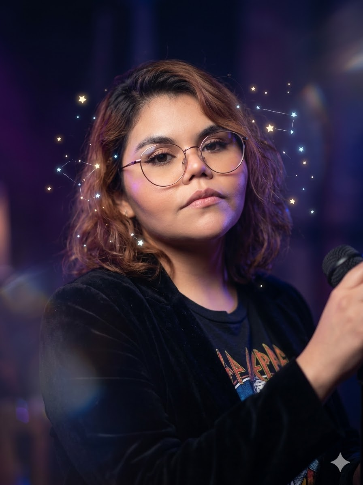
Cuéntame qué necesitas y te propongo el alcance, los entregables y una cotización clara. Trabajo contigo de principio a fin.
Diseño páginas adaptables que explican tus servicios y guían a tus clientes al contacto. Todos los paquetes web incluyen SEO inicial.
Ver paquetes web ↓Planeación, diseño y organización de contenido para mantener activa y coherente la comunicación de tu marca.
Ver paquetes para redes ↓Diseño de publicaciones, carruseles e historias que presentan tus servicios y comunican tus ideas con claridad.
Explorar opciones ↓Reels y videos cortos editados con ritmo, texto y subtítulos, listos para compartir. Puedes enviarme tu material grabado.
Armar mi paquete ↓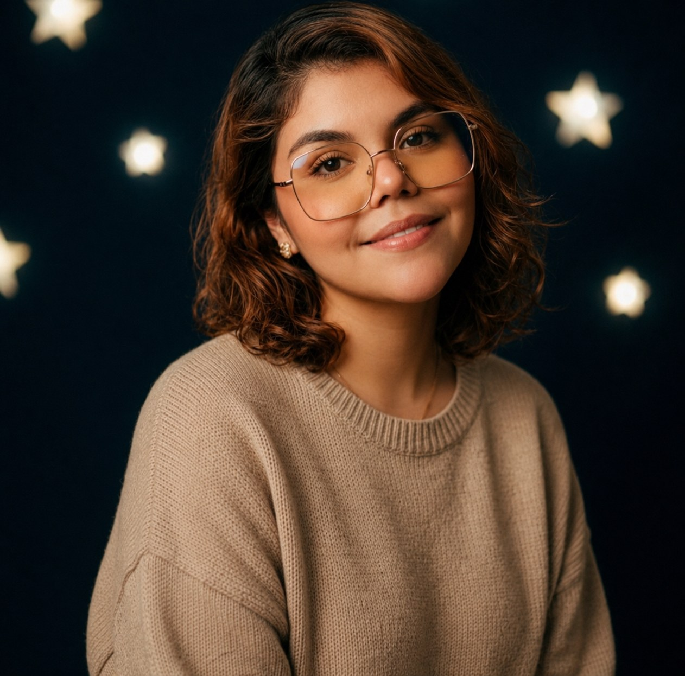
Me gusta convertir ideas en piezas claras y atractivas, cuidando que cada diseño tenga sentido para el negocio y para las personas a quienes quiere llegar. Al trabajar conmigo, tendrás comunicación directa y una propuesta ajustada a tus objetivos.
Soy cofundadora de Dorenio, un proyecto de diseño web y presencia digital. En este portafolio comparto ese trabajo junto con proyectos de contenido para salud, belleza y entretenimiento.
Conoce algunos proyectos ↓Diseño piezas para que cada negocio explique sus servicios con una voz visual propia. Desliza cada proyecto para ver más ejemplos.
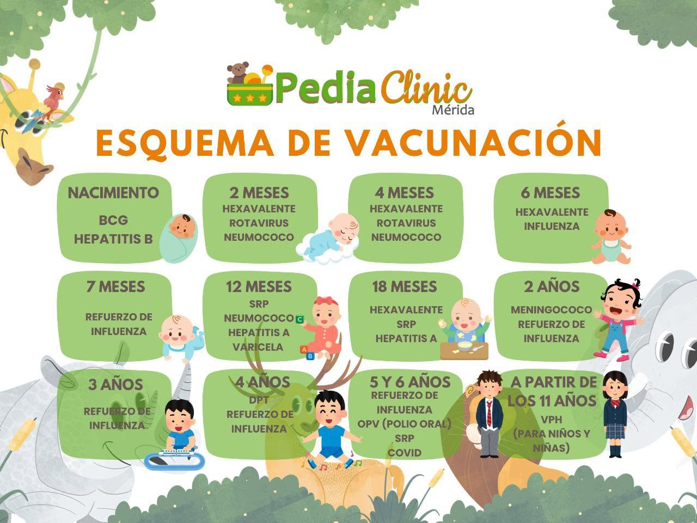
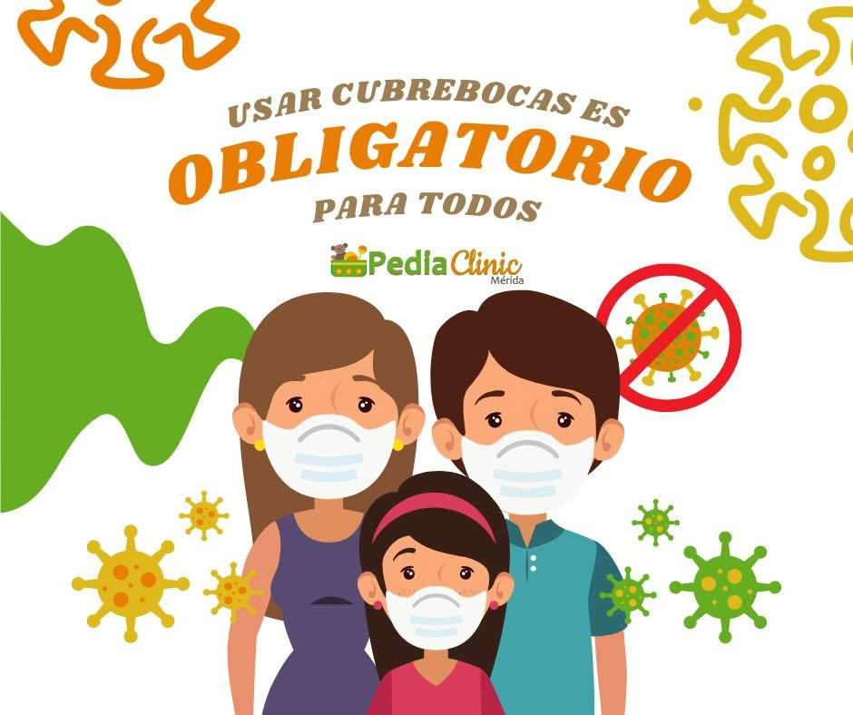
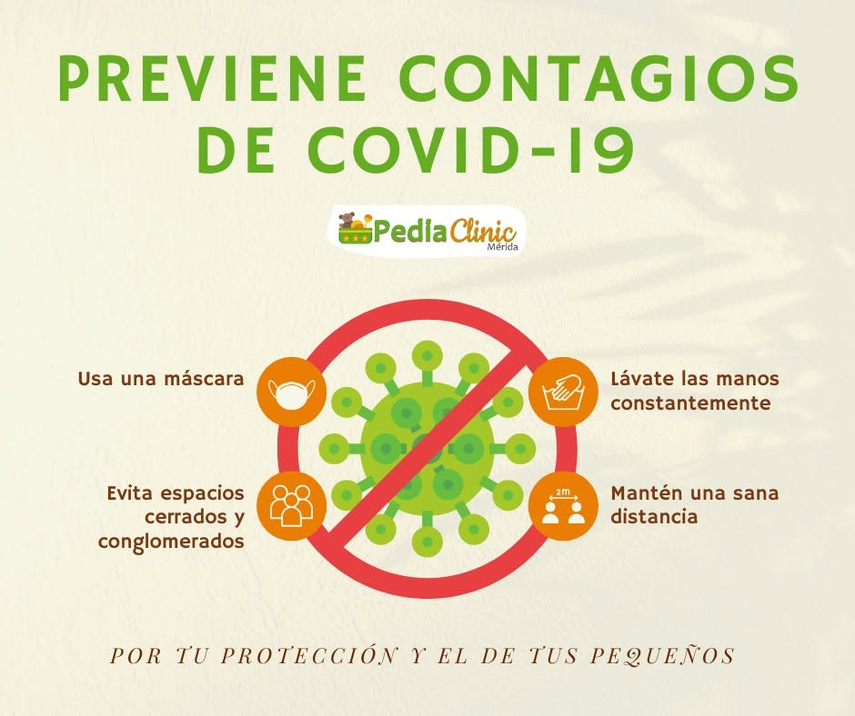
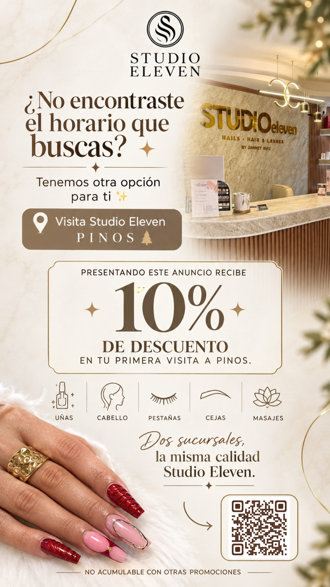
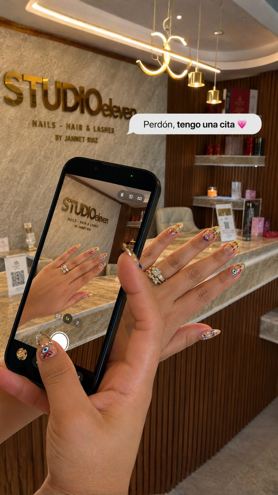
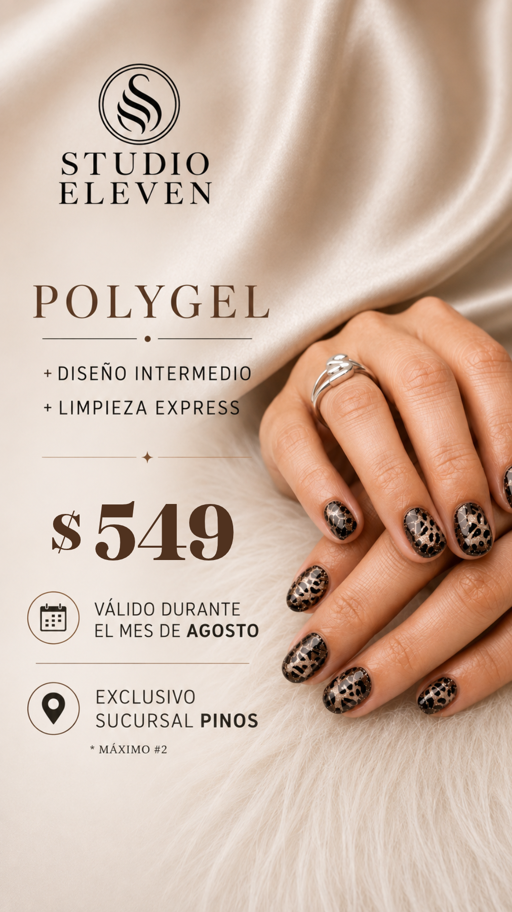
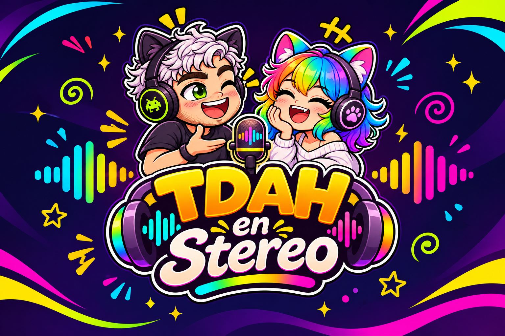
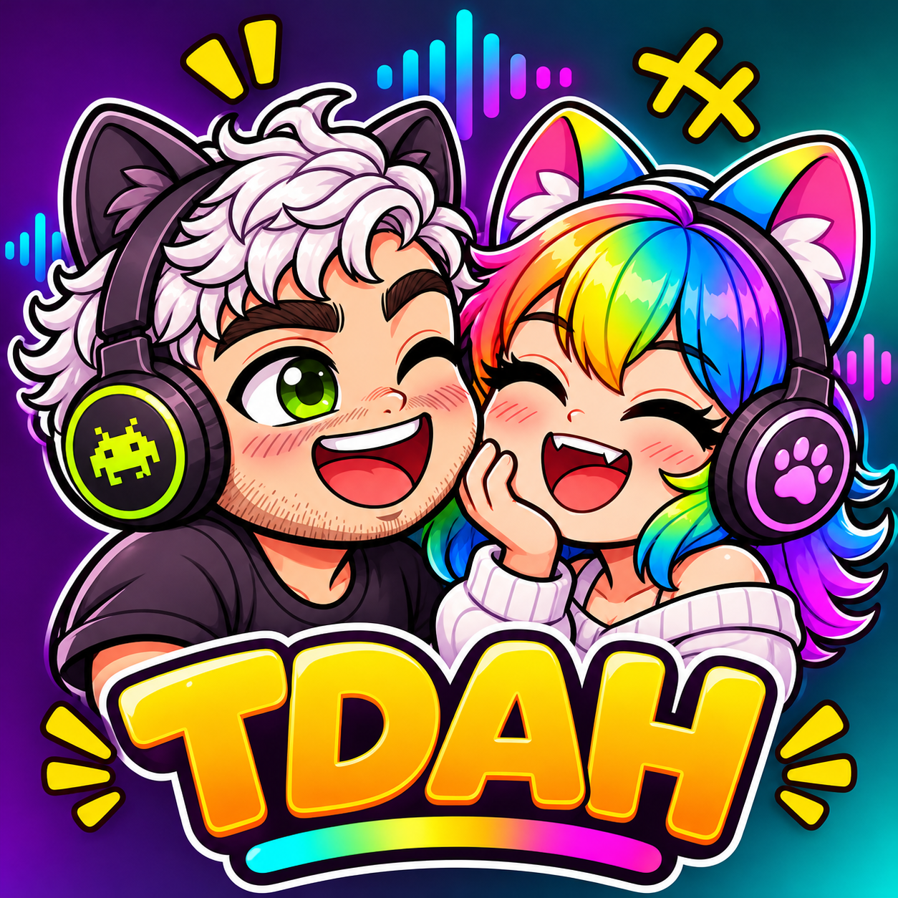

Soy cofundadora de Dorenio, donde participo en proyectos de sitios web, SEO y presencia en Google. Lo incluyo como parte de mi experiencia; aquí encuentras también mis servicios personales de contenido, diseño y video.
Conocer el proyecto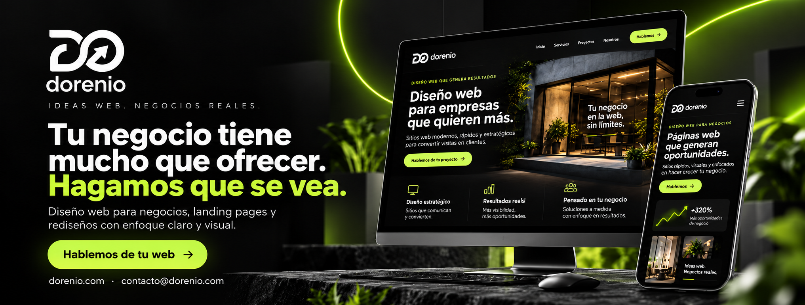
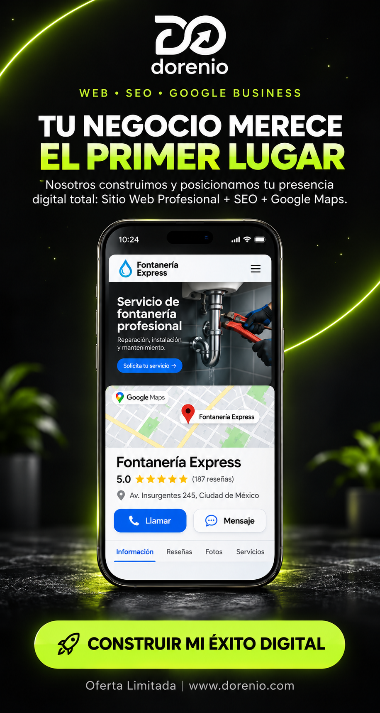
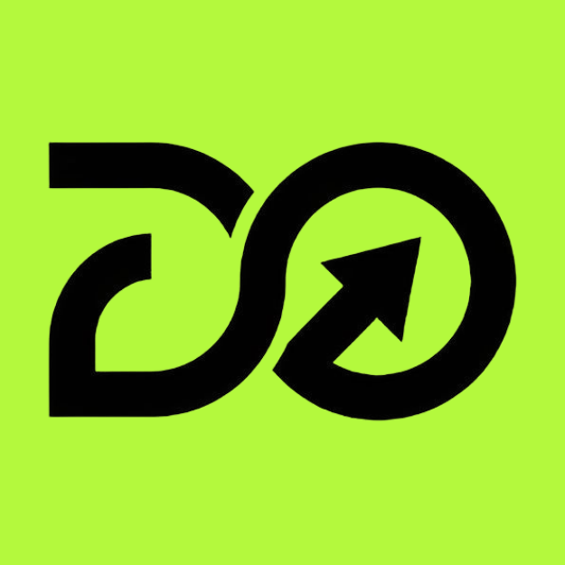
Diseño tu sitio web e incluyo configuración SEO inicial en cada paquete. Los precios son una referencia; antes de empezar definimos contigo el alcance final.
Tu primera presencia profesional en internet.
Desarrollo inicial · SEO básico incluido
Más espacio para tus servicios y tu identidad.
Desarrollo inicial · SEO básico incluido
Tu negocio, sus servicios y tu experiencia en profundidad.
Desarrollo inicial · SEO básico incluido
Precios de referencia en MXN basados en los paquetes de Dorenio, proyecto que cofundé. Vigentes del 1 de noviembre al 31 de diciembre de 2026 para cotizaciones aceptadas durante ese periodo. Yo te acompaño directamente en el desarrollo; confirmaremos el alcance por escrito.
*Dominio y alojamiento sujetos a verificar disponibilidad y condiciones antes de contratar. Renovaciones, impuestos, tienda en línea, reservas personalizadas e integraciones especiales pueden generar cargos aparte. Los tres paquetes incluyen SEO inicial; el SEO continuo y el posicionamiento no se garantizan con una tarifa única.
Consulta también la información de DorenioSabes qué incluye el servicio, qué necesito de ti y qué sigue antes de que empecemos.
Conocemos tu negocio, tus metas y a quién quieres llegar.
Definimos alcance, piezas, tiempos y cotización para tu proyecto.
Desarrollamos y afinamos contigo cada elemento acordado.
Te entregamos los materiales o publicamos tu sitio, listo para avanzar.
Dime qué quieres mejorar de tu presencia digital y te responderé con los siguientes pasos y una propuesta a tu medida.